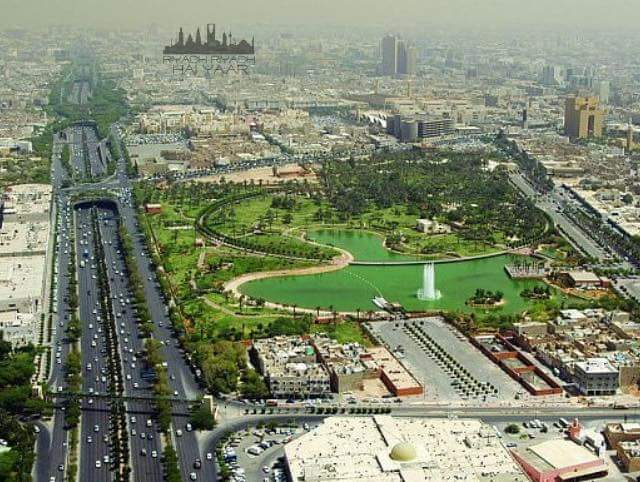
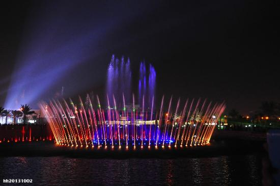
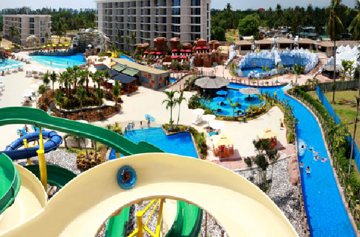
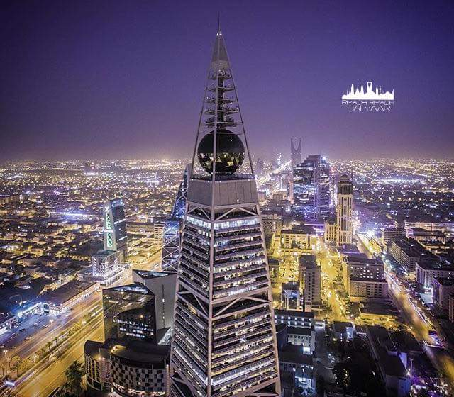
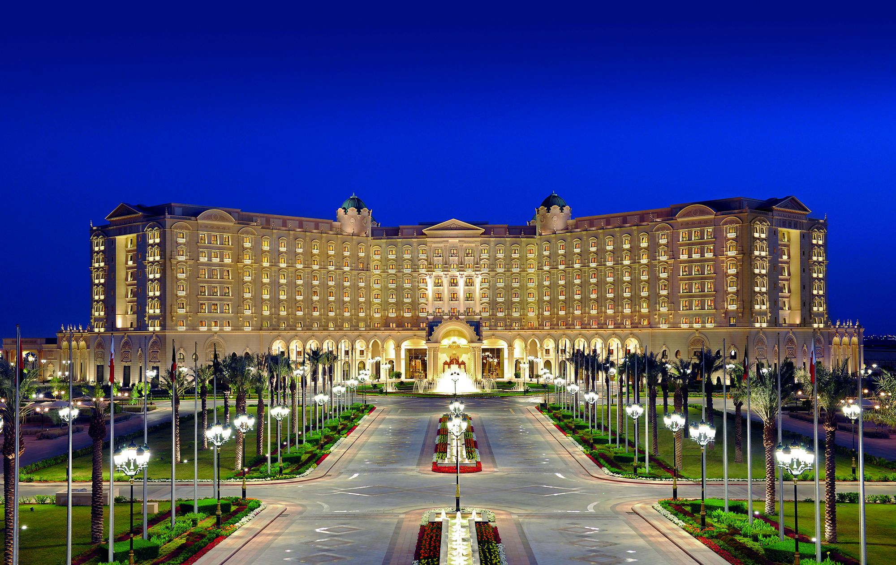
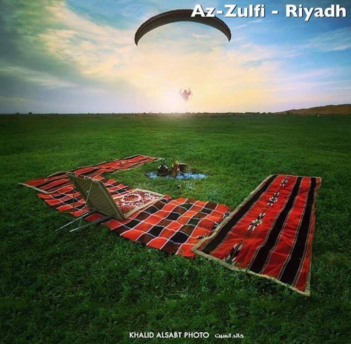
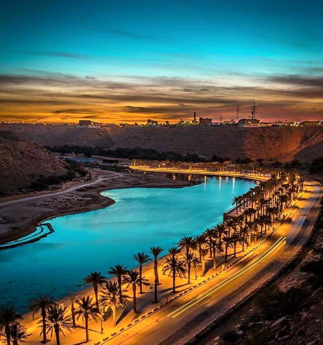
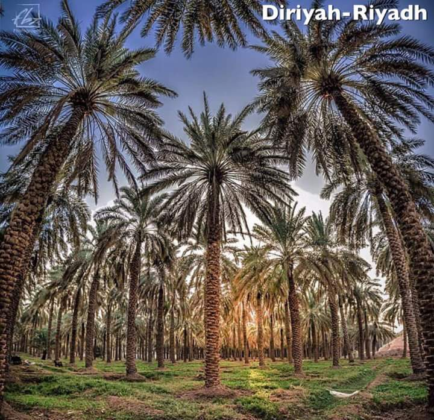
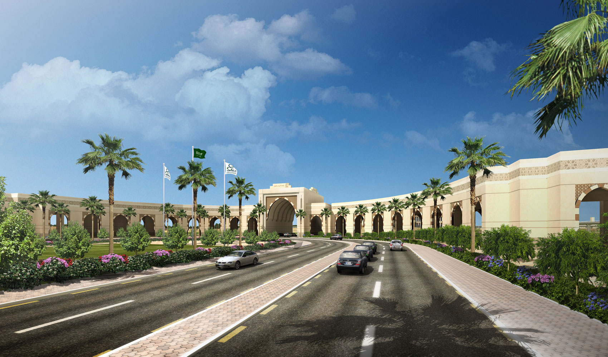

Riyadh
Introduction
"The thriving capital at the heart of the modern Kingdom of Saudi Arabia"
The name Riyadh is derived from the Arabic word meaning a place of gardens and trees ("rawdah"). It was called Al-Yamamah in the past. With many wadis (a former water course, now dry) in the vicinity, Riyadh has been since antiquity a fertile area set in the heartland of the Arabian Peninsula.
Geography & Location
The city is in the interior of the country 530 miles by road from Jeddah on the Red Sea and 240 miles from Dammam on the Arabian Gulf. About 1000 miles out along the road to Jeddah is the impressive Tuwaiq escarpment - brittle sandstone cliffs rising 200 to 500 ft. for about 30 miles. To the South about 50 miles from Riyadh lies AI Kharj, an extensively irrigated area with much agriculture.
Riyadh is the capital city as well as the most populous city of the Kingdom of Saudi Arabia, which lies in the Central Region called Najd, on a sedimentary plateau 600 meters above sea level. It has a very dry climate and rainfall, but a good underground water supply makes it one of the few natural fertile areas in the Kingdom outside the south-west.
The population exceeds two million, and the total inhabited area is more than 1,600 km. Riyadh also contains two university "cities," King Saud and Imam Mohammad bin Saud Islamic University, in addition to military and security colleges, specialized institutes, information, cultural information and cultural centers, sports facilities and stadiums, literary Centers and public libraries.
National Parks
Salaam Park
Location
Location is parallel to the Rule Palace on the South, bordering King Fahad Road on the West and Tariq bin Ziad Road on the North, Salam Road on the East and Aseer Road on the South. Total area is 312 thousand square-meters. This park is established Salam famous farm land whose ownership was taken back to public utilities of the city that farm was famous for its quality dates palms. It was used to be private ownership accommodating residential palace, various service buildings and a mosque whose age is exceeding 70 years. Due to the strategic location of that farm, and the need of parks and open areas as well as green lands, and due to high population density in this area, it was decided long ago to expropriate this farm to convert it into public park that serves citizens.
King Abdullah Park
It is spread over a total area of 318,000 square meters with a green cover of 150,000 square meters. The park has five main entrances and houses several gardens, children’s parks, rest areas for families, sports areas, walkways, seating areas, and a 1,700-square-meter restaurant. Other attractions included a large lake, a dancing fountain equipped with laser technology, amphitheaters, an open area for conducting shows and events, and a Saudi flag post of a height of 37 meters. The park also houses a building on an area of 1,160 square meters to hold events.
Amusement Parks
Water Splash
Covering an area of 5000 square meters, it has some of the most modern children's games with special area for families.
Towers
Kingdom Tower

Faisalya Tower
Designed by British architect Norman Foster and built in 2000 by the Bin Laden construction company, Al Faisaliah Tower was the first of the startling new structures to rise above Riyadh’s skyline. It’s most famous for its enormous glass globe (24m in diameter and made of 655 glass panels) near the summit. Its 44 floors contain a five-star deluxe hotel and four exclusive restaurants, offices, apartments, the Sky shopping mall and a fabulous viewing platform (Globe Experience).
The needlepoint pinnacle (with a crescent on the tip) sits 267m above the ground. The tower is off Olaya St.
Hotels
Ritz Carlton
Regarded among top Riyadh luxury hotels, our palatial, 52-acre retreat features elegant accommodations, fine dining and lavish spa facilities.
DISCOVER A MAJESTIC AND ELEGANT OASIS AT THE RITZ-CARLTON, RIYADH. WITH SPACIOUS SUITES, EXCEPTIONAL SERVICE, A WORLD-CLASS SPA AND EXCEPTIONAL DINING OPTIONS, THIS LUXURY HOTEL IN RIYADH, SAUDI ARABIA OFFERS AN UNFORGETTABLE RETREAT.
An exceptional attention to detail can be found throughout this luxury hotel in Saudi Arabia, from the custom carpets that adorn the floors of our ballrooms and the tempting array of juices at Strike Bowling Alley, to the luxury bath amenities found in each of our guest rooms and suites and the selection of unique dates, such as those filled with peanut butter, offered in the Club Lounge. Whether guests are here to make a business meeting, attend a global conference or join loved ones to celebrate a special occasion, our hotel in Riyadh promises an unforgettable experience in the Kingdom of Saudi Arabia.
Places to be
Az-Zulfi
Wadi Hanifa
A dry and sharply defined riverbed (wadi) begins about 40 km north of Riyadh and runs in a north-south direction for over 120 km's, cutting through the western edge of the city, known as Wadi Hanifah. Wadi Hanifah was once the lifeblood of the Riyadh area, rich in groundwater, filled with palm groves and farms and dotted with a string of small towns and villages throughout history. In recent decades, the Wadi has been used as a large dumping ground for wastewater, sewage, and industrial waste, but a recent ambitious rehabilitation project has just been completed. An 80 km stretch running through western Riyadh is now essentially an 80-km desert park, though many parts of the Wadi floor are occupied by private estates and farms with high walls. The Wadi has several entry points, but perhaps the easiest route is by taking King Abdullah Road west past the university and into the town of Arqah. Eventually, you will reach a large round-about. Take the exit heading downwards into the Wadi. Follow the road even as it winds and weaves its way through the Wadi (do not be tempted to turn onto any side streets). Eventually, you will reach a police checkpoint, to the left of which is an an entry point to the Wadi floor. A narrow paved road runs along the Wadi floor. Heading southwards, you will eventually find designated picnic and barbecue spots facing the Wadi's cliff-like walls.
While dry for most of the year, wadis can flood very quickly with a moderate amount of rain. Never approach a wadi during the rain or even its immediate aftermath. Even looking over the edge of a wadi can be dangerous as the Wadi's edges can break off during the rain. Every year, several deaths are reported from flash floods all across Saudi Arabia.
Diriyah
Riyadh's most interesting attraction, the ruins of Diraiyah, lie 30km (20 miles) north of the city centre and to the northwest of Al-Riyadh on the bank of Wadi Hanifa, with many date palm trees. This was the Kingdom's first capital and is now the country's most popular archaeological site. Diraiyah was founded in 1446, reached the height of its powers at the end of the 18th century, and was razed in 1818. The reconstructed ruins include palaces, mosques and the city wall.
Diriaiyah rises from the desert like a high-tech oasis of glass, steel, and concrete. Ad-diriyyah is fortified by a strong wall which consists of several watch towers built during the region of Al-Imam Abdulaziz bin Mohammad bin Saud to protect the city from any danger and foreign aggression. The buildings are made of mud, straw and seashells. The colorful doors at the entrances of the buildings are made of wood; these doors operate with a unique slide-and-lock mechanism designed centuries ago. Inside the buildings, the ceilings are crossed with beams of tamarisk logs and palm fronds, allowing light and air to pass through. A huge government restoration project has been initiated to restore the area so that visitors have safe and easy access.
Projects Under Development
King Abdullah Financial District
The King Abdullah Financial District (KAFD) is a new development under construction near King Fahad Road in the Asahafa area of Riyadh, Saudi Arabia being undertaken by the Rayadah Investment Corporation on behalf of the Pension Authority of the Kingdom of Saudi Arabia, consisting of 59 towers in an area of 1.6 million square metres. It will provide more than 3 million square metres of space for various uses, 62,000 parking spaces and accommodation for 12,000 residents. In 2011 it was the largest project in the world seeking green building accreditation. Bombardier won a $241m USD contract to build an automated monorail for the development. The design guidelines do not separate the sexes in the district. The KAFD master plan was designed and overseen by Danish Architects Henning Larsen Henning Larsen Architects. Additional design work was provided by W Architecture and Landscape Architecture.The CEO of the development is Waleed Aleisa.
The project is estimated to cost 29 billion Saudi riyals ($7.8 billion).

Universities
Princess Nourah Bint Abdulrahman University
Princess Nourah Bint Abdulrahman University is a public women’s university located in Riyadh, the capital of Saudi Arabia. It is the largest university for women in the world. The university offers diplomas, bachelor and postgraduate degrees. It has over 60,000 students in 34 colleges in the city of Riyadh and in the neighbouring cities, a preparatory year program for all first year undergraduate students, an Arabic Language Institute (for non-speakers of Arabic), a Deanship of Community Service and Continuous Education, and a Community College. It has more than 5000 academic and administrative staff.
